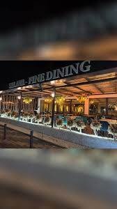

Curated Landmarks
Obiective Autentice

Biserica Densuș
O construcție bizară și fascinantă, ridicată din resturi de temple romane. Un monument de arhitectură brută și sacră.

Cetatea Colț
Izolată pe o stâncă abruptă, cetatea oferă o perspectivă asupra Hațegului pe care Jules Verne a numit-o legendară.